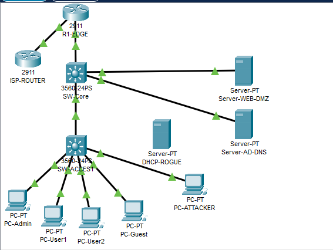
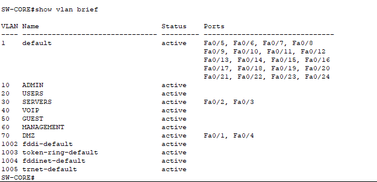
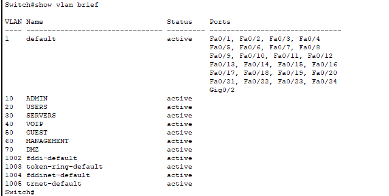
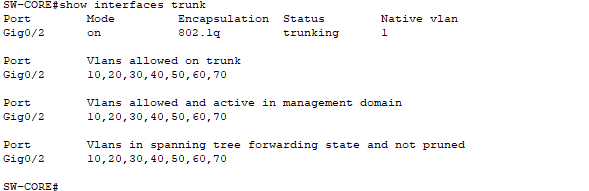
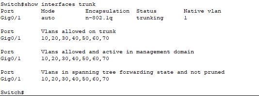
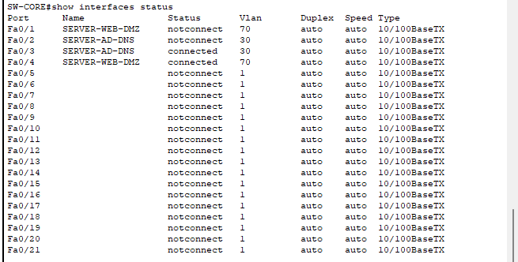
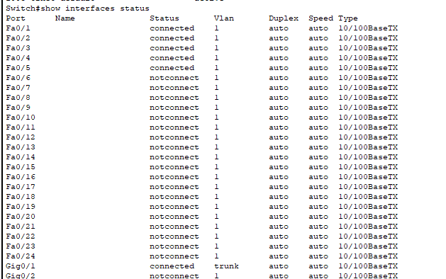
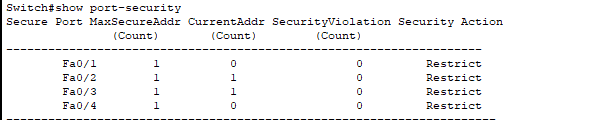

RÉSEAUX · INFRASTRUCTURE · SÉCURITÉ
Conception d’une architecture réseau sécurisée
Étude et documentation d’une infrastructure réseau avec Cisco Packet Tracer : segmentation logique, routage, filtrage des flux et sécurisation des équipements.
NETWORK ENGINEERING & SECURITY
Segmentation · Routage · Contrôle des accès
01 — Objectifs du projet
- Concevoir une architecture réseau et documenter son plan d’adressage.
- Segmenter le réseau à l’aide de VLAN.
- Étudier le routage entre réseaux et vers le WAN.
- Définir des règles de filtrage et des mesures de sécurité sur les équipements.
- Documenter des scénarios de tests réseau et de sécurité.
02 — Environnement technique
- Outil de simulation : Cisco Packet Tracer.
- Segmentation : VLAN et routage inter-VLAN.
- Routage : OSPF et routage WAN étudiés dans le projet.
- Contrôle des flux : listes de contrôle d’accès (ACL).
- Services et accès : NAT/PAT et SSHv2.
- Sécurité de niveau 2 : mécanismes documentés dans le dépôt du projet.
03 — Architecture et segmentation
La topologie fournie montre un routeur de bord, un switch cœur, un switch d’accès, des postes utilisateurs et des serveurs placés dans des segments dédiés. Les captures ci-dessous documentent la topologie et les sorties de configuration réellement fournies.




04 — Trunks et état des interfaces
Les sorties montrent un trunk 802.1Q avec les VLAN 10, 20, 30, 40, 50, 60 et 70 autorisés, ainsi que l’état des ports. L’interprétation doit rester limitée aux valeurs lisibles dans les captures jointes.




05 — Port-security
La sortie fournie présente une limite d’une adresse MAC par port, zéro adresse actuelle pour les ports affichés et l’action Restrict. La capture ne suffit pas à confirmer des essais de violation ; ce résultat n’est donc pas présenté comme un test d’attaque validé.

06 — Routage et filtrage
Segmentation VLAN et routage inter-VLAN
La segmentation sépare logiquement les équipements. Le routage inter-VLAN permet les communications nécessaires entre segments lorsque la configuration et les règles de sécurité l’autorisent.
OSPF et accès WAN
La documentation du projet aborde le routage OSPF, la connectivité WAN ainsi que NAT/PAT.
Listes de contrôle d’accès
Les ACL contrôlent les flux autorisés entre réseaux. Les règles exactes et leurs résultats doivent être présentés à partir des configurations réellement réalisées.
07 — Validation et limites
La présence d’un sujet dans la documentation ne signifie pas nécessairement que son implémentation est terminée. Pour présenter des résultats solides, conserver uniquement les tests réellement exécutés et accompagnés de preuves lisibles.
- Connectivité entre équipements et réseaux concernés.
- Vérification du routage et des chemins empruntés.
- Contrôle de l’application des ACL.
- Validation des mesures de sécurité effectivement configurées.
08 — Compétences mobilisées
- Lecture et documentation d’une architecture réseau.
- Segmentation logique et plan d’adressage IP.
- Compréhension du routage et du filtrage des flux.
- Prise en compte de la sécurité des équipements réseau.
- Organisation de scénarios de tests et documentation technique.